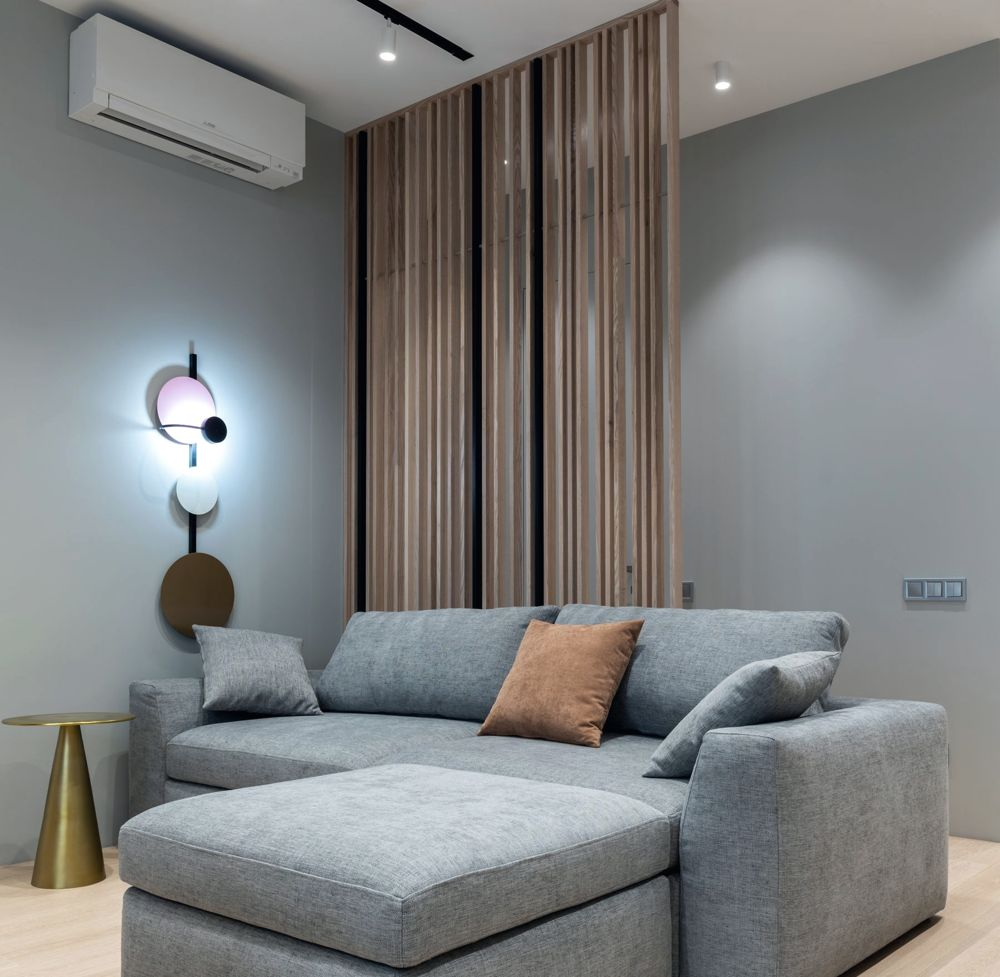
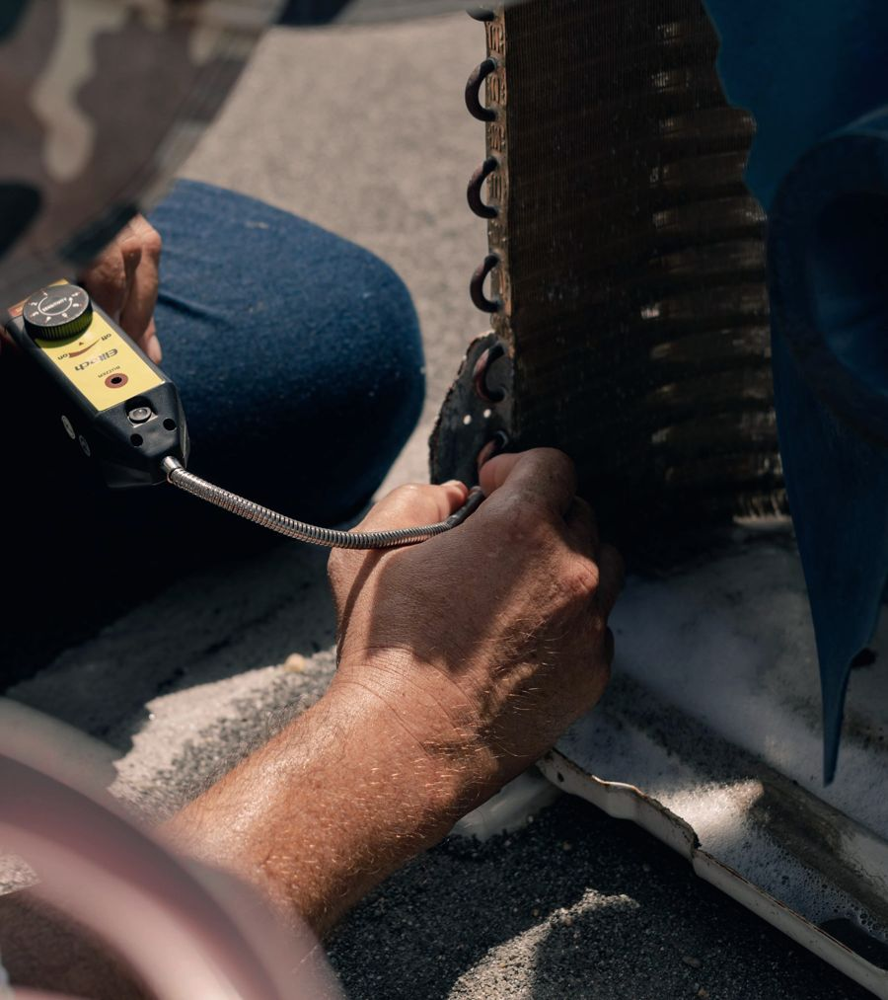
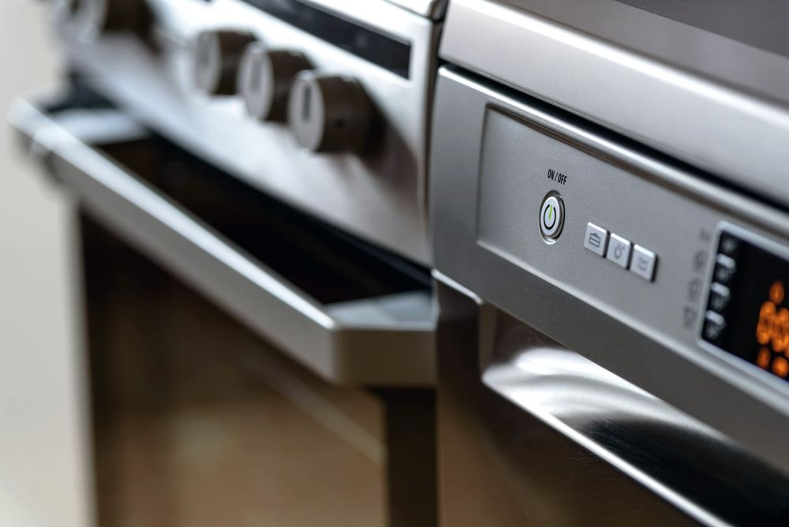
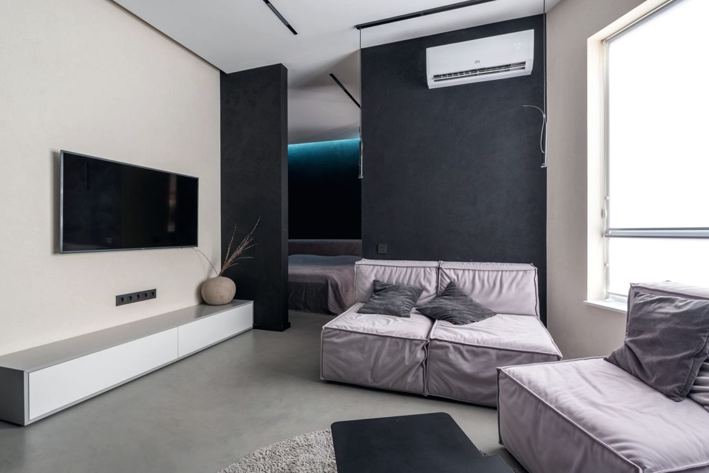

Manavgat klima servisi ve beyaz eşya tamiri
Arızayı yerinde bulur, onayınızla tamir ederiz. Garantili işçilik.
30 saniyede arıza kaydıArızayı tarif edin
Cihaz ve belirtiyi seçin.
1Cihaz
2Belirti
Servis kaydı
WhatsApp mesajı olarak ustaya gider.
Bakım takvimi
Önerilen bakım tarihinizi hesaplayın.
255 Google yorumu
“Kart arızasını bulup aynı gün çözdü, taktığı parçaya garanti verdi.”
Çamaşır makinesi · Google yorumu
“Pazar günü olmasına rağmen gelip yerinde baktı ve tamir etti.”
Bulaşık makinesi · Google yorumu
“Gerek olmayan parçayı değiştirmedi; telefonda yol gösterip masraftan kurtardı.”
Buzdolabı · Google yorumu
“Kiracı olarak defalarca klima söküp taktırdım; bu kadar temiz çalışanını görmedim.”
Klima · Google yorumu
“Montajdan kalan ve başka serviste çözülemeyen sorunu düzeltti.”
Klima · Google yorumu
“Sözünde durdu, zamanında geldi, ücreti makuldü.”
Bulaşık makinesi · Google yorumu
Hizmetler
Dokunun, ayrıntısı açılsın.
 Klima bakımı ve ilaçlı yıkama
Klima bakımı ve ilaçlı yıkama
Filtre ve eşanjör ilaçlı yıkanır, drenaj açılır, gaz basıncı ölçülür. Ev, apart ve pansiyonlarda birden çok klimaya aynı gün sırayla bakılır.

Klima arıza tamiri
Soğutmayan, su damlatan, ses yapan ya da hata kodu veren klimada arıza yerinde aranır; çoğu arıza yerinde çözülür.
Gaz kontrolü ve dolumu
Gaz kendiliğinden bitmez; eksikse kaçak vardır. Önce manometreyle ölçüm ve kaçak tespiti, sonra dolum.
 Montaj, söküm, yer değiştirme
Montaj, söküm, yer değiştirme
Taşınırken ya da kiracı değişirken klimanızı söküp yeni yerine takıyoruz; temiz boru, düzgün drenaj, iz yok.
Çamaşır ve bulaşık makinesi
Su boşaltmayan, sıkmayan, ısıtmayan makinelerde pompa, motor, rezistans ve kart tamiri.
 Buzdolabı ve derin dondurucu
Buzdolabı ve derin dondurucu
Soğutmayan, karlanan ya da durmadan çalışan dolaplarda motor, gaz, defrost ve fitil işleri.
 Elektronik kart tamiri
Elektronik kart tamiri
Kartı hemen değiştirmek yerine önce tamir: devre elemanı, sigorta ve lehim onarımıyla masrafı düşürürüz.

Fırın, ocak ve şofben
Isıtmayan fırın, yanmayan ocak gözü, sıcak su vermeyen şofben için ateşleme, rezistans ve termostat onarımı.

İkinci el klima ve beyaz eşya
Bakımı yapılmış, çalışır durumda ikinci el cihazlar. Elimizde ne olduğunu WhatsApp'tan sorun.


Hizmet bölgesi
Manavgat merkez ve yaklaşık 17 km çevresi.
Atölye ve saatler
Bahçelievler Mah. 5050. Sk. No:1, 07600 Manavgat/Antalya
| Pazartesi | 09:00 – 18:00 |
| Salı | 09:00 – 18:00 |
| Çarşamba | 09:00 – 18:00 |
| Perşembe | 09:00 – 19:00 |
| Cuma | 09:00 – 19:00 |
| Cumartesi | 09:00 – 19:00 |
| Pazar | 09:00 – 17:00 |
Sık sorulanlar
Manavgat'ta klima servisi ne zaman gelir?
Gün içindeki yoğunluğa göre en kısa zamanda geliyoruz. WhatsApp'tan arızayı ve adresinizi yazarsanız gelebileceğimiz saati hemen söyleriz.
Pazar günü servis var mı?
Evet. Pazar 09:00–17:00 açığız. Pazartesi–çarşamba 09:00–18:00, perşembe–cumartesi 09:00–19:00.
Klima bakımı ne sıklıkla yapılmalı?
Yalnız yazın kullanılan klimada yılda bir, yaz-kış kullanılanda yılda iki bakım önerilir. Kiraya verilen daire, apart ve pansiyonlarda sezon öncesi bakım misafir şikâyetini önler.
Klimamın gazı bitti mi?
Klima gazı kullanıldıkça azalmaz; eksikse bir yerde kaçak vardır. Önce basınç ölçülür ve kaçağın yeri bulunur, sonra dolum yapılır.
Hangi marka cihazlara bakıyorsunuz?
Tüm markaların klima, çamaşır makinesi, bulaşık makinesi, buzdolabı, fırın ve şofbenlerine bakıyoruz.
Yapılan işe garanti veriyor musunuz?
Evet. Yaptığımız işler garantilidir; garanti süresi değişen parçaya göre işe başlamadan söylenir.
Ücreti önceden öğrenebilir miyim?
Arızayı görmeden kesin fiyat söylemek doğru olmaz. Yerinde tespitten sonra ücreti söyler, onayınızla işe başlarız. Fotoğraf ya da hata kodu gönderirseniz kabaca yön verebiliriz.
Side, Sorgun ve Kızılağaç'a geliyor musunuz?
Evet. Manavgat merkez başta olmak üzere Side, Sorgun, Titreyengöl, Ilıca, Kızılağaç, Kızılot, Evrenseki, Çolaklı ve Gündoğdu'ya geliyoruz. Listede olmayan yer için sorun.
Manavgat klima servisi: neden Çelik Teknik?
Manavgat'ta klima servisi ararken çoğu kişi önce Google yorumlarına bakıyor. Çelik Teknik, Bahçelievler'deki atölyesinden Manavgat merkez, Side, Sorgun, Titreyengöl, Ilıca, Kızılağaç, Kızılot, Evrenseki ve Çolaklı'ya klima bakımı, klima arıza tamiri, klima montajı ve gaz dolumu hizmeti veriyor. Google'da 255 yorumla 5,0 puan: arıza yerinde bulunuyor, gerekmeyen parça değiştirilmiyor, yapılan işe garanti veriliyor.
Klimanın yanında Manavgat beyaz eşya servisi olarak çamaşır makinesi, bulaşık makinesi, buzdolabı, derin dondurucu, fırın ve şofben tamiri de yapıyoruz. Elektronik kart arızalarında önce tamir yoluna gidiyoruz. Side'de apart, Sorgun'da pansiyon ya da Manavgat'ta kiralık daireniz varsa sezon öncesi toplu klima bakımıyla misafir şikâyetinin önüne geçebilirsiniz.
Örnek tasarım, yayında değildir · Fotoğraflar: Pexels ve işletme · Tasarım: dijitabela.com